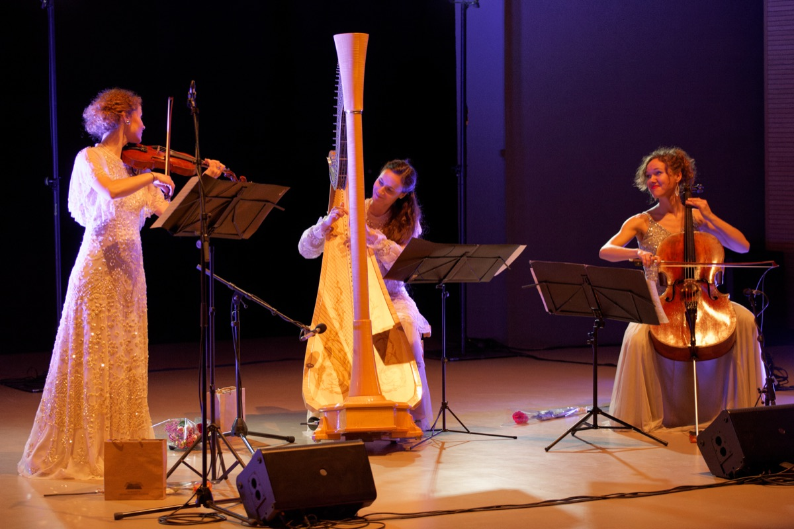
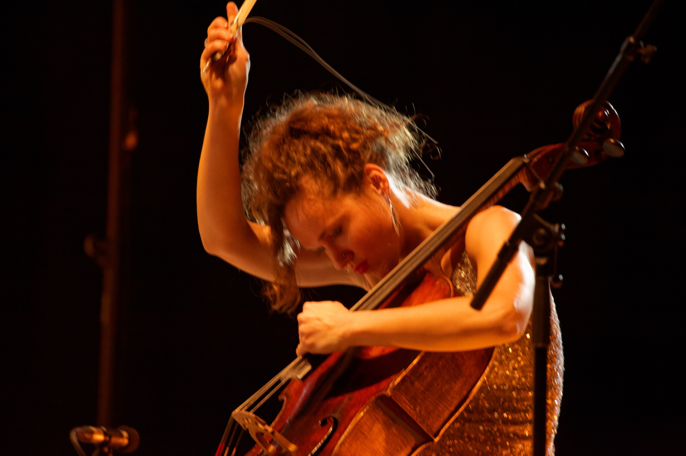
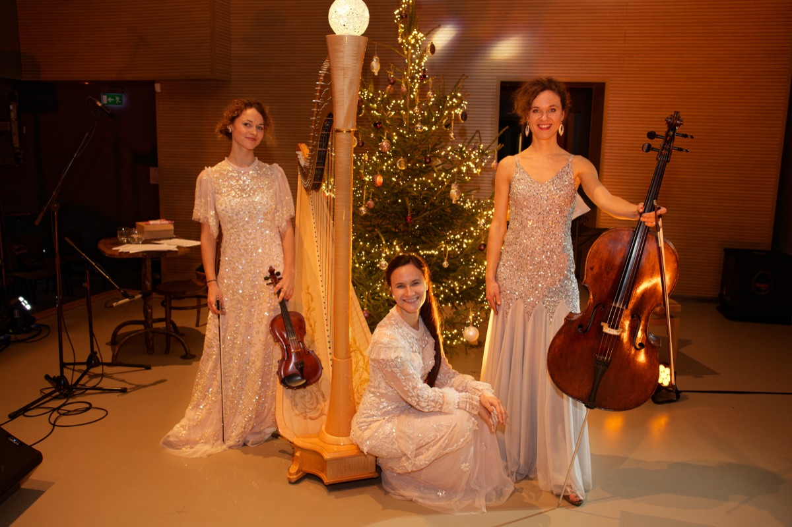
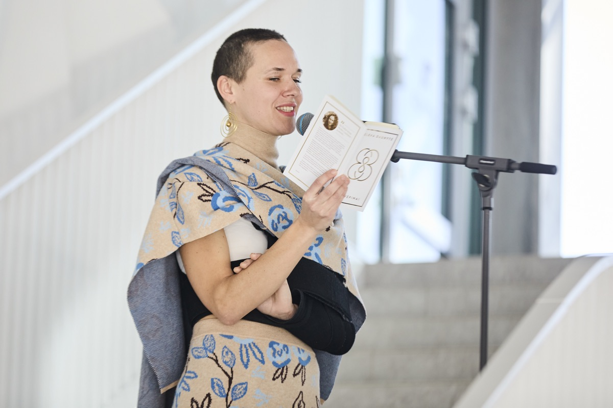
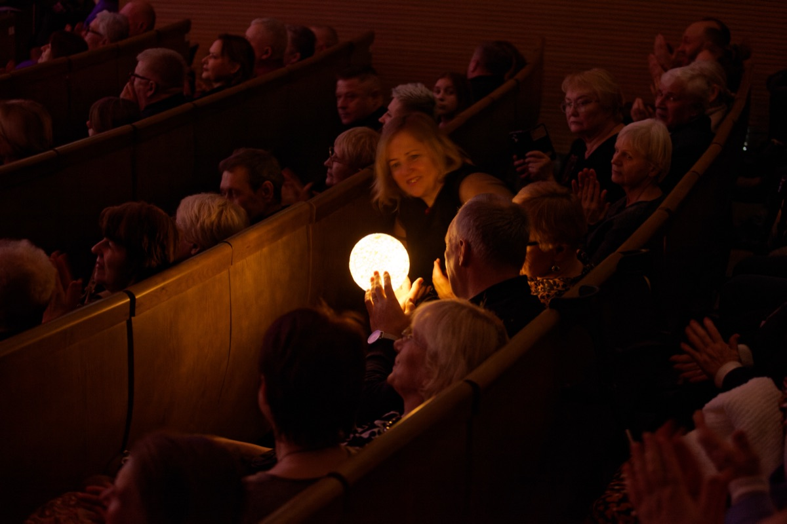
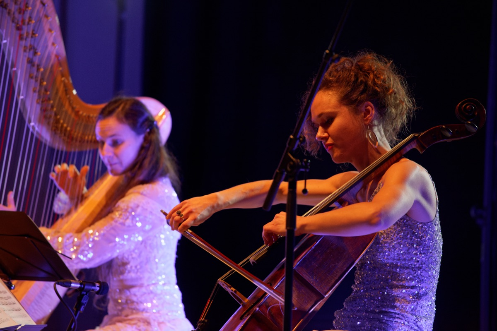
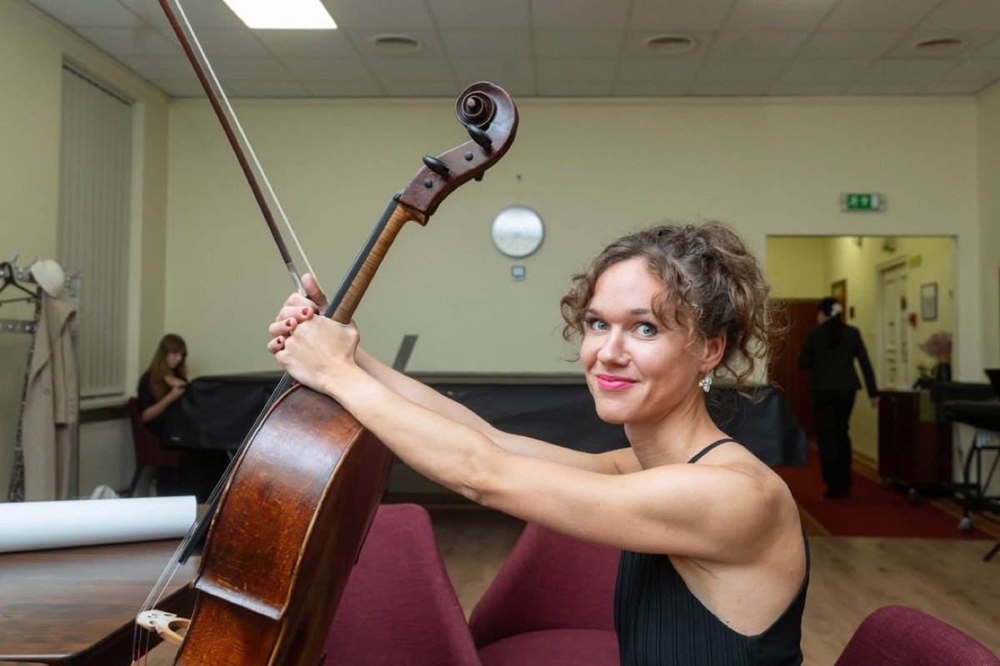
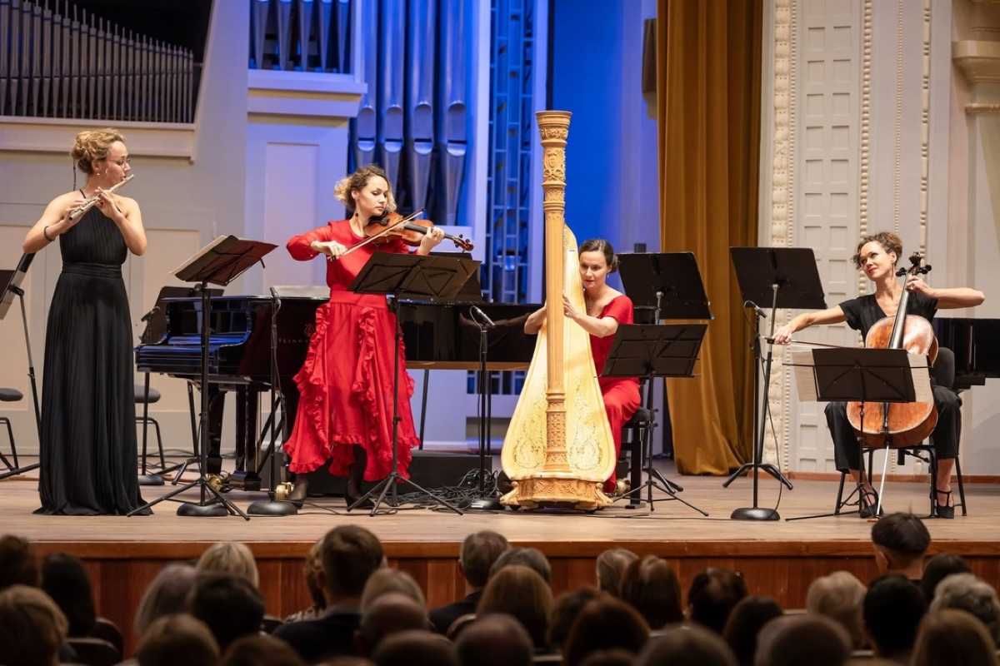
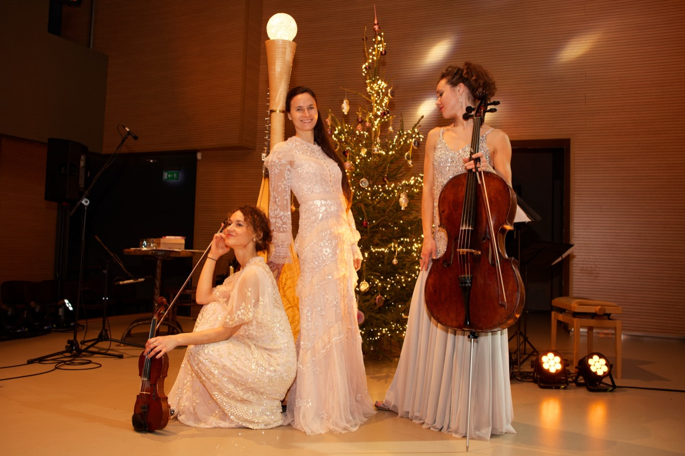
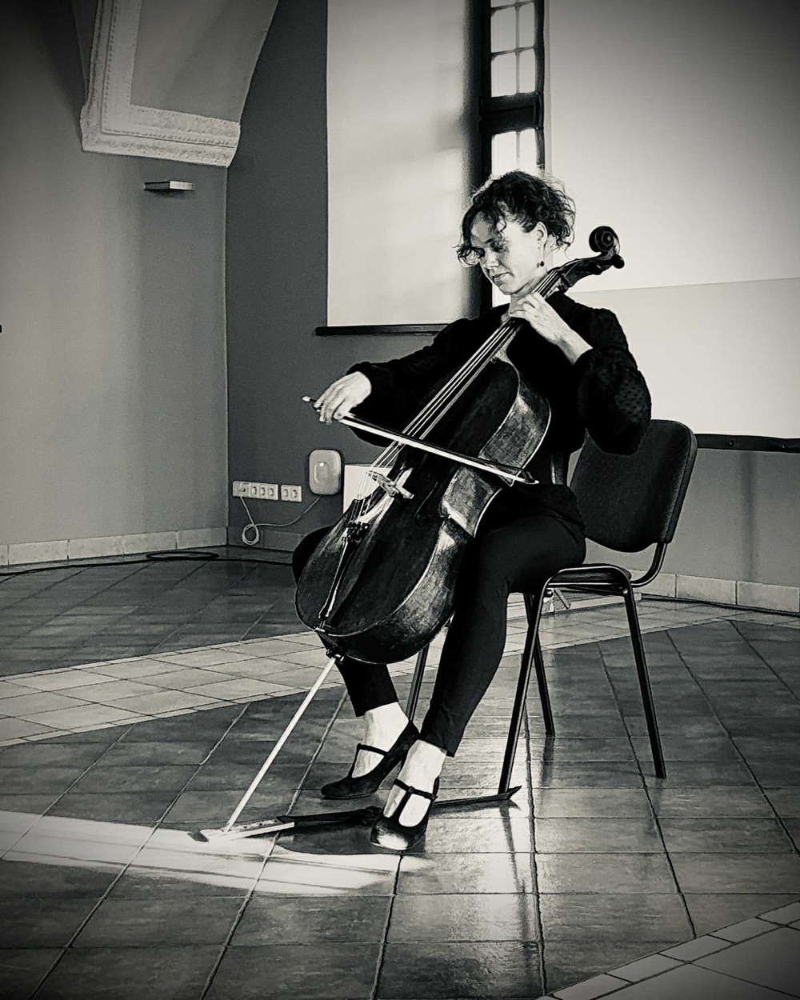

Concerti e performance
Programmi classici per feste e commemorazioni. Concerti alternativi — performance in cui si incontrano musica, poesia, danza e immagine. Durata, organico e repertorio si concordano in anticipo.
Chiedi i programmiElena Daunytėvioloncellista · cantante · poetessa · creatrice
Verso un cambiamento consapevole di fronte alla musica e alle arti
Concerti di musica classica e performance alternative, educazione culturale, eventi terapeutici e di consapevolezza, feste organizzate dalla A alla Z — per scuole, centri culturali, dimore storiche, aziende e privati in tutta la Lituania.

Che cosa offro
Ogni programma si adatta allo spazio, all'occasione e al pubblico — dall'aula magna di una scuola al cortile di una dimora storica o a uno studio di yoga.

Programmi classici per feste e commemorazioni. Concerti alternativi — performance in cui si incontrano musica, poesia, danza e immagine. Durata, organico e repertorio si concordano in anticipo.
Chiedi i programmi
Concerti didattici e laboratori culturali per le scuole, finanziati dal programma statale lituano Culture Passport. Laboratori creativi e lezioni di strumento per bambini e adulti.
Vedi i laboratori
La parte artistica di un matrimonio, di un anniversario o di una festa aziendale, oppure l'intero evento chiavi in mano: programma, artisti, palco, audio, catering, fotografo. Un solo referente e una sola fattura invece di cinque.
Parliamo dell'evento
Terapia con la musica, la parola, i profumi e la danza per adulti. Pacchetto yoga e meditazione, pratiche di consapevolezza, seminari su un tema scelto e ritiri con suono dal vivo.
Componi un pacchetto
Eventi in cui il pubblico non si limita ad ascoltare: partecipa, sceglie e a volte suona. Adatti a comunità, team aziendali e feste di famiglia.
Come funziona
«Dive into personality» — una conversazione dal vivo con l'artista subito dopo il concerto, quando il palco è ancora caldo. Il pubblico si avvicina al creatore e l'artista mette in parole ciò che ha vissuto sulla scena. Riprese incluse; la registrazione resta all'organizzatore. Su richiesta, anche ricerca di artisti per la vostra festa.
Raccontami di piùLet it come!
Ascolta
Per questo si trova qui e non in fondo alla pagina.
«33 įkvėpimai» è un’esperienza in cui si incontrano tre modi di tornare a sé: la parola poetica, la musica e il respiro consapevole. Alla base della serata c’è il libro della poetessa Elena Daunytė «33 įkvėpimai», composto da 33 terzine nate dal silenzio, dalle esperienze e dalle trasformazioni.
Elena legge le sue poesie, mentre Ninah Sol guida le pratiche di respiro consapevole, invitando i partecipanti con delicatezza e in sicurezza a sentire il proprio respiro, rallentare e rilassarsi. L’intera esperienza è avvolta da una musica calma, scelta appositamente. Non servono abilità né preparazione: basta sedersi, chiudere gli occhi e lasciarsi portare dalla parola, dal suono e dal respiro. Il respiro diventa ritmo, la musica sostegno e la poesia uno specchio in cui ognuno può riconoscere qualcosa di sé.
È uno spazio per fermarsi e sentire che a volte basta un solo respiro consapevole perché la giornata prenda un altro colore.
Dopo l’evento è possibile acquistare il libro «33 įkvėpimai» direttamente dall’autrice.
Let it come!
Laboratori conformi ai criteri del Culture Passport. Rientrano in una sola ora di lezione e basta lo spazio di un'aula.
Programmi stagionali, natalizi e alternativi con prezzo chiaro, scheda tecnica e calendario concordato.
Programma acustico per cortile, sala, chiesa o spazio insolito — senza palco e senza corrente. Posso diventare una voce fissa della vostra proposta stagionale.
La parte artistica della serata, la festa aziendale o l'intero evento chiavi in mano. Per le agenzie — una voce già pronta nel catalogo delle proposte natalizie.
Musica per la cerimonia e parte artistica della serata. Se serve, trovo anche gli altri artisti — ballerini, cantanti, attori.
Suono dal vivo per yoga, meditazione e pratiche di consapevolezza. Sessioni di terapia con musica, parola, profumi e danza per adulti.
Let it come!
Educazione
Educazione per bambini e adulti. I primi due laboratori vengono proposti alle scuole tramite il programma Culture Passport; gli altri si prenotano direttamente.
Ascoltiamo come la stessa melodia cambia umore cambiando tempo, timbro o accordatura. I bambini vedono il violoncello da vicino e poi disegnano l'emozione che hanno sentito.
Cent'anni fa i compositori iniziarono a scrivere la musica non con le note, ma con linee e segni. A piccoli gruppi si crea una partitura grafica e, nella stessa lezione, la si ascolta eseguita al violoncello. Non serve alfabetizzazione musicale — servono decisioni.
Incontri per bambini e adulti: un'introduzione alla musica classica in senso ampio e agli strumenti musicali — da vicino, suonati dal vivo. Su richiesta il percorso prosegue con lezioni di comprensione musicale e di arte dell'esecuzione.
Laboratori di sintesi delle arti, dove la musica incontra la parola e il movimento. I partecipanti non guardano: costruiscono. Da suono, testo e silenzio nasce un breve pezzo comune. Adatto a una classe, a un team o a una festa di famiglia.
Lezioni individuali e di gruppo: violoncello o altro strumento a scelta, comprensione musicale e presenza scenica. Dal primo contatto fino all'esibizione — per bambini e adulti, senza limiti di età.
I primi due laboratori saranno prenotabili con i fondi del Culture Passport da gennaio 2027, una volta approvata la candidatura. Fino ad allora — per accordo diretto con la scuola: una giornata, tre laboratori per classi diverse, 420 €.
Il prezzo degli incontri introduttivi, dei workshop e delle lezioni dipende dal numero di partecipanti, dalla durata e dalla sede — invio una cifra precisa con il preventivo entro un giorno lavorativo.
Let it come!
Repertorio
Questi si possono prenotare subito: hanno una durata, un organico e una scheda tecnica definiti. Il prezzo dipende dall'organico e dalla distanza.
Programma festivo per la serata di un centro culturale o di una comunità: melodie natalizie conosciute, canti lituani e qualche svolta inattesa negli arrangiamenti.
Programma acustico per cortili di dimore storiche, parchi e feste cittadine. Funziona anche all'aperto: non serve alcuna infrastruttura di palco.
Cerimonia di matrimonio, commemorazione, parte musicale di una premiazione o di un'inaugurazione. Nelle chiese e nelle sale delle dimore storiche l'acustica è spesso tale da non richiedere alcuna amplificazione.
Sintesi delle arti: violoncello, poesia o altri testi, danza e immagine in un'unica opera. Il programma nasce per uno spazio preciso invece di esservi trasferito — così una cantina di dimora storica o un capannone vuoto diventano un vantaggio, non un ostacolo.
Un programma in cui il pubblico è parte dell'opera: sceglie che cosa suoneremo dopo, esegue semplici parti sonore, costruisce il ritmo. Dal concerto non si esce con un'impressione, ma con un'esperienza.
Elementi di terapia con musica, parola, profumi e danza in un'unica sessione per adulti. Non intrattenimento, ma uno stato: suono dal vivo, respiro, profumi e movimento disposti in modo che dopo novanta minuti si esca diversi da come si è entrati.
Pacchetto di fine settimana con yoga, meditazione e suono dal vivo: pratica mattutina, seminario su un tema scelto, concerto serale e sessione di silenzio. Si costruisce insieme ai padroni di casa dello spazio — da uno a tre giorni.
Conversazione dal vivo con l'artista — il creatore, l'interprete — subito dopo il concerto, davanti al pubblico. L'obiettivo è avvicinare il pubblico all'artista. È una riflessione reciproca: l'artista può dare un nome alle proprie esperienze tecniche, interpretative, artistiche e sceniche, mentre chi ascolta capisce meglio che cosa sia un artista sulla scena e conosce le sfumature del mondo dell'esecuzione. Appena scesi dal palco le persone sono aperte come raramente accade: qui si dicono cose che in un'intervista consueta non emergono mai. Riprese e registrazione incluse; la registrazione resta all'organizzatore.
L'intero evento dalla A alla Z in un'unica regia: programma, artisti, palco, impianto audio, catering, fotografo e scaletta della serata. All'organizzatore restano un solo referente e una sola fattura invece di cinque.
I prezzi non comprendono il viaggio oltre un raggio di 60 km da Vilnius: oltre tale distanza si applica una tariffa di 0,25 €/km, indicata nel preventivo. I programmi contrassegnati «Su richiesta» vengono quotati in base a organico, durata e spazio — invio la cifra esatta entro un giorno lavorativo. Gli arrangiamenti su misura e i fine settimana di dicembre si quotano a parte; l'importo preciso è indicato nel preventivo prima della firma.
Let it come!
Vivere la trasformazione attraverso la musica
In senso letterale e figurato.
Ognuno di noi porta dentro di sé uno strumento — il corpo, il respiro, la voce, la memoria. Lo suonano il tempo, le esperienze, le persone care, perfino il silenzio tra di esse. La domanda è una sola: lasciamo che sia qualcun altro a toccare le corde, o prendiamo in mano l'arte di creare il nostro suono?
In questo spazio la musica e l'arte non sono intrattenimento, ma un modo per tornare a sé — per sentire come suona il proprio tono interiore, quando vibra libero e quando è teso. Come lo strumento musicale chiede un corpo rilassato e, insieme, un'attenzione consapevole a ogni suono, così anche la vita invita ad ascoltare, finché non diventa un'opera nostra.
Questo cammino ha le sue note
Qui, attraverso il suono, il ritmo e il silenzio, vi invitiamo a fermarvi e a sentire: che cosa suona oggi attraverso di voi — e che cosa vorreste suonare voi stessi?
Let it come!
Crescita personale
Le arti come strumento per affinare il comportamento, formare abitudini positive e arricchire l'immaginazione — grazie alla quale possiamo costruire un rapporto più bello, sostenibile, equilibrato e armonioso con noi stessi e con il mondo intorno a noi.
Un evento in cui le personalità si intrecciano attraverso arti diverse — musica, parola, movimento e immagine — stimolando l'espressione creativa dei partecipanti.
L'obiettivo di «Menais mainais» è avvicinare ogni partecipante al proprio artista interiore, perché «siamo tutti artisti in codice — solo che non tutti lo sanno…». È proprio la partecipazione interattiva agli eventi musicali e artistici che può aiutare una persona a scoprire il proprio potenziale artistico.
Volgiti nella direzione della verità!
Mi interessa questo eventoLet it come!
Galleria
Il committente vuole vedere come apparirete nella sua sala: per questo funzionano meglio gli scatti in spazi diversi.






Let it come!
Chi sono
Elena Daunytė è creatrice e interprete, vincitrice di concorsi internazionali e membro dell'ensemble familiare Regnum Musicale. Il suo strumento è il violoncello: si è diplomata alla Scuola d'arte M. K. Čiurlionis e ha studiato al Royal Northern College of Music di Manchester e all'Accademia lituana di musica e teatro, nella classe del prof. Rimantas Armonas.
Ha suonato con orchestre lituane e straniere e si è perfezionata in masterclass con Giovanni Sollima, David Geringas e Frans Helmerson. Ha ricevuto attestati di ringraziamento dai Presidenti della Repubblica di Lituania Valdas Adamkus e Dalia Grybauskaitė. Il videoclip «Ryto ugnis» è stato trasmesso nell'archivio LRT nell'ambito del concorso KLIPVID 2021.
Chi organizza eventi non ha bisogno solo di musica, ma di una persona che si occupi da sé dell'audio, del calendario e dei documenti. Per questo ogni programma qui ha una durata, un organico e un prezzo definiti — e non un «ci accordiamo sul posto».
Contattami
Let it come!
Domande pratiche
Let it come!
Scrivetemi l'occasione, il luogo e la data — rispondo entro un giorno lavorativo con una proposta concreta.
Scrivi un messaggioLet it come!
Contatti
Let it come!